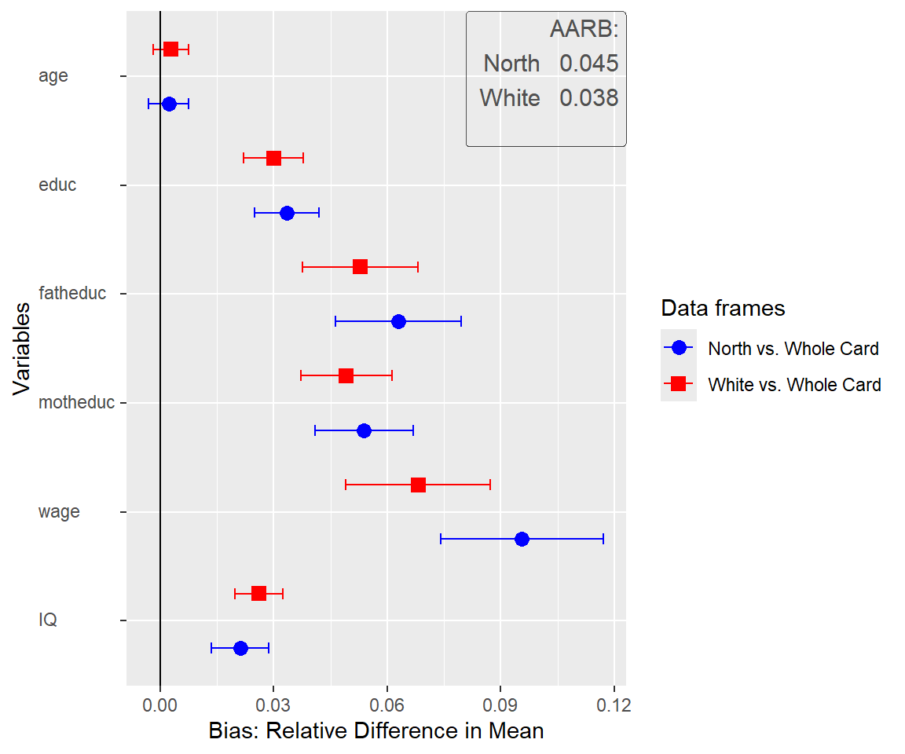
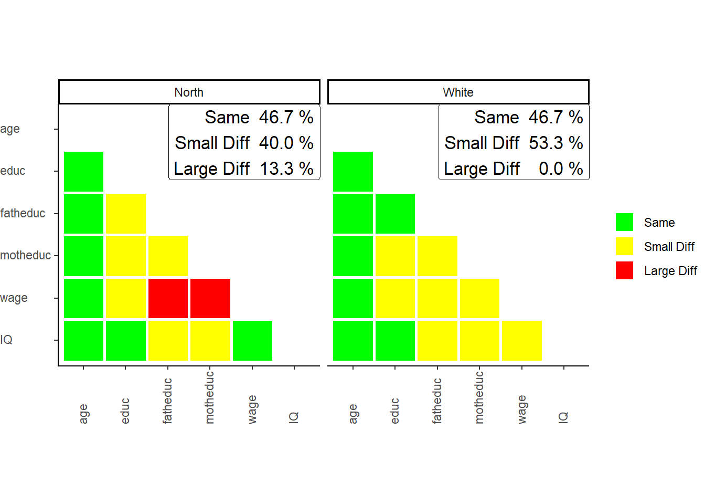
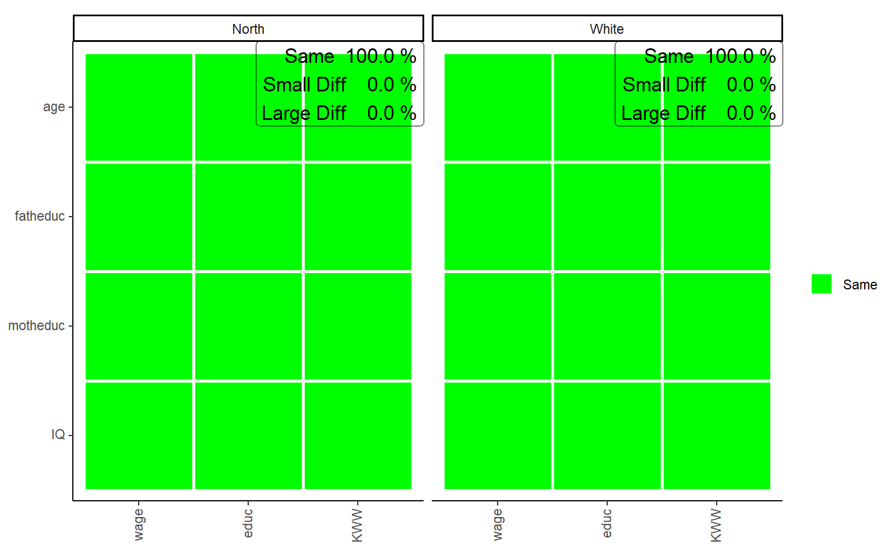
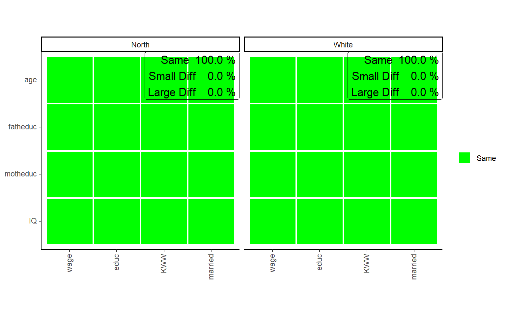

# Installing SampcompR
# install.packages("sampcompR")
# Loading SampcompR
library(sampcompR)SampcompR for Response Bias Estimation
At a glance
Table of Content
Introduction
Set-up
Data for representation bias analysis
For this tutorial, we use data from an old American survey, called card (n=3010). Although this dataset is rather dated, it is easily available and also suitable do demonstrate the use of the sampcompR package, without much preperation. it consists of several demographic variables as well as some variables to generate groupings, as well as some additional variables.
Note
Although available in the wooldridge package (Shea 2024) the Card data, was also added to sampcompR and originates from Professor Card (1995):
D. Card (1995), Using Geographic Variation in College Proximity to Estimate the Return to Schooling, in Aspects of Labour Market Behavior: Essays in Honour of John Vanderkamp. Ed. L.N. Christophides, E.K. Grant, and R. Swidinsky, 201-222. Toronto: University of Toronto Press
Some interesting items, as described in the card sample, are:
| Items | Institution |
|---|---|
| age | in years |
| educ | years of schooling, 1976 |
| fatheduc | father’s schooling |
| motheduc | mother’s schooling |
| wage | hourly wage in cents, 1976 |
| IQ | IQ score |
| married | 1 if married, 1976 |
| KWW | knowledge world of work score |
| south | 1 if in south, 1976 |
| black | 1 if black |
Getting started
To use sampcompR (Bjoern Rohr and Felderer 2024), we first need to install the package from the repository of CRAN, the Comprehensive R Archive Network. For installation, we can use the following commands:
In addition, to the the package, we also need data for comparison. Typically a data frame is required, containing the variables for which we want to estimate bias, alongside benchmark information. Benchmark information is best also provided in the form of a data frame, although, for example, if the goal is to estimate bias on an univariate level, a named vector of means (e.g., from a population census) is sufficient. For the purpose of this application example, we perform the bias estimation based on a data frame named card in the wooldridge(Shea 2024) package.
# Get Data for comparison
data("card")
whole_card<-card
# we recode the married variable to a dummy, idicating of the respondents are married or not, which will be needed later.
whole_card$married[whole_card$married!=1]<-0
# Split the data frame to generate example data
north<-whole_card[whole_card$south==0,]
white<-whole_card[whole_card$black==0,]
# load some additional packages needed in this application
library(tidyverse)
library(knitr)
library(kableExtra)As described above, for this application example we assume that (1) we have a sample that only contains respondents living in the North and want to estimate the bias if this should be generalized to the whole population, and further (2) we have a sample containing only White respondents that should be generalized. Although those scenarios are only for the purpose of demonstrating the tool, there can be rather similar scenarios in your own work. For example if you have conducted a mixed mode survey (e.g., online and offline mode) and want to know for future surveys, if it is okay, to only recruit respondents in one of the modes (e.g., online mode).
Tool application
Univariate Comparison
Now that we have data frames we want to compare that are gathered similarly, we will start with a univariate comparison.
library(sampcompR)
univar_data<-sampcompR::uni_compare(dfs = c("north","white"),
benchmarks = c("whole_card","whole_card"),
variables=c("age","educ","fatheduc",
"motheduc","wage","IQ"),
funct = "rel_mean",
nboots=0,
summetric="avg2",
data=T,type = "comparison")
sampcompR::plot_uni_compare(univar_data,
name_dfs=c("North","White"),
name_benchmarks=c("Whole Card","Whole Card"))
Here we can see a plot showing the difference in mean for several variables (indicated in the variables parameter) in the data frames. The first data frame, named as a character in dfs, is compared to the first data frame in benchmarks, while the second is compared to the second, and so forth. Another important parameter is nboots. It indicates the number of bootstraps to calculate the confidence intervals. We recommend using at least 2000 to 10000 bootstraps, although this may take a while. It is also possible to set nboots==0, as we did in this example. In this case, the confidence intervals will be calculated analytically. The upper right corner of the plot shows the average relative difference in mean, which is chosen by using summetric=="avg2". Last, the parameter data indicates if the function should return a uni_compare_object which can be used in other package functions (e.g., plot_uni_compare).
Be careful:
High or low amounts of bias in some estimates does not necessarily mean that the survey has similar amounts of bias in other variables. This would only be the case, if those variables are highly correlated to the estimates for which bias was estimated. For variables, where no benchmark is available careful consideration is needed.
Also, the difference can be shown in a table that can be helpful to document the results. We can easily get a good result table by adding the resulting table to other functions (e.g., the kable() function in RMarkdown).
uni_output_table<-sampcompR::uni_compare_table(univar_data)Table 1: Difference in Relative Means off different Survey Groups
| Variables | North | White |
|---|---|---|
| age | 0.002 | 0.003 |
| (-0.003, 0.007) | (-0.002, 0.007) | |
| educ | 0.033 | 0.030 |
| ( 0.025, 0.042) | ( 0.022, 0.038) | |
| fatheduc | 0.063 | 0.053 |
| ( 0.046, 0.080) | ( 0.038, 0.068) | |
| motheduc | 0.054 | 0.049 |
| ( 0.041, 0.067) | ( 0.037, 0.061) | |
| wage | 0.096 | 0.068 |
| ( 0.074, 0.117) | ( 0.049, 0.087) | |
| IQ | 0.021 | 0.026 |
| ( 0.014, 0.029) | ( 0.020, 0.032) | |
| Average Error | 0.045 | 0.038 |
| RANK | 2 | 1 |
| N | 1358 - 1795 | 1764 - 2307 |
The table displays the difference between dfs and benchmarks for all variables, the confidence intervals, and the summary metric specified when creating the uni_compare_object for every comparison. As we can see in the table, as well as in the plot before, surveying only respondents living in the North would have let to an overestimation of education, wage and IQ, however the age would have been estimated rather similar. We find similar results for the second comparison. Of cause the data frame for this example is rather dated and a newer data frame might have led to different results.
Bivariate Comparison
As with the univariate comparison, we start with a general function to calculate the bivariate difference between the data frames and plot the results.
biv_data<-sampcompR::biv_compare(dfs = c("north","white"),
benchmarks = c("whole_card","whole_card"),
variables= c("age","educ","fatheduc",
"motheduc","wage","IQ"),
data=T, corrtype = "rho",
weight = "weight",
id="id")
sampcompR::plot_biv_compare(biv_data,plots_label=c("North","White"))
In this comparison, the Pearson’s r correlations of all variables indicated in the variables parameter are compared between the data frames and benchmarks. The plot shows the difference in three categories. A correlation is green (Same) for one of two reasons. On the one hand, it can be that the Pearson’s r correlation of this variable pair is not significant in the data frame and in the benchmark. On the other hand, it can be that both z standardized Pearson’s r values are not significantly different. If neither of these conditions is true, the plot’s correlations are marked yellow (Small Diff) or red (Large Diff). To be red, it must also fulfill one of two additional conditions. The Pearson’s r correlations could be of different directions (e.g., one is positive, while the other is negative). Second, it could be that one of them is double the size of the other.
In our example, we can see on the left that the a survey containing only respondents living in the North is very different from the complete survey regarding the investigated bivariate correlations. Only 46.7% of all correlations are similar between both groups (Same) and would lead to similar interpretations measured with either group of the survey. 40.0% of correlations show minor differences (Small Diff), meaning that similar interpretations may not be guaranteed, while 13.3% of the correlations are very different (Large Diff) between the groups. The right half of the plot shows the comparison between White respondents and the whole survey, where similar results are found.
As before, we can also take a closer look at the exact values by putting the biv_compare_object into the biv_compare_table function of our package.
# Difference correlation matrix of the first comparison
table_biv1<-sampcompR::biv_compare_table(biv_data,type = "diff",comparison_number=1) Table 2: Difference in Pearson’s r for the North/South Sample
| age | educ | fatheduc | motheduc | wage | IQ | |
|---|---|---|---|---|---|---|
| age | ||||||
| educ | 0.05 | |||||
| fatheduc | -0.02 | -0.07* | ||||
| motheduc | -0.04 | -0.09*** | -0.06** | |||
| wage | 0.05 | -0.11*** | -0.10** | -0.12*** | ||
| IQ | 0.01 | -0.01 | -0.08* | -0.07* | -0.06 |
Using type = diff gives us a matrix for the difference in Pearson’s r between the surveys, while comparison_number = 1 indicates that the table should be for the first comparison (between thenorth and the whole sample). Here we can again see which correlations significantly differ between the surveys and to what extent. However, to know why the colors are as they are in the plot, we must also look at the individual correlation matrices for both surveys. Here we only look at the tables for comparing north versus the whole sample respondents as an example.
# North correlation matrix of the first comparison
table_biv2<-sampcompR::biv_compare_table(biv_data,type = "dfs",comparison_number=1)
# South correlation matrix of the first comparison
table_biv3<-sampcompR::biv_compare_table(biv_data,type = "benchmarks",comparison_number=1) Table 3: Pearson’s r correlation matrix for the North Sample
| age | educ | fatheduc | motheduc | wage | IQ | |
|---|---|---|---|---|---|---|
| age | ||||||
| educ | 0.04 | |||||
| fatheduc | -0.08** | 0.41*** | ||||
| motheduc | -0.08** | 0.36*** | 0.57*** | |||
| wage | 0.35*** | 0.19*** | 0.09*** | 0.08*** | ||
| IQ | -0.05 | 0.50*** | 0.26*** | 0.23*** | 0.13*** |
Table 4: Pearson’s r correlation matrix for the Whole Crad Survey
| age | educ | fatheduc | motheduc | wage | IQ | |
|---|---|---|---|---|---|---|
| age | ||||||
| educ | -0.01 | |||||
| fatheduc | -0.06** | 0.47*** | ||||
| motheduc | -0.04* | 0.45*** | 0.63*** | |||
| wage | 0.30*** | 0.30*** | 0.19*** | 0.20*** | ||
| IQ | -0.06** | 0.51*** | 0.33*** | 0.31*** | 0.19*** |
This shows us the whole picture. Looking at the correlation between wage and fathers education, for example, we can see that the correlations in both surveys are different. While, the correlation is positive and small in the north group, stronger for the in the whole survey. Here, in addition to the conditions for a slight difference, one condition for a Large Diff are true (i.e., one Pearson’s r value is at least double the size if the other, 0.09 vs. 0.19). Therefore, we could come to very different conclusions measuring those correlations for either group.
Multivariate Comparison
When we want to know how different certain data frames or sub-data frames are, it may also be interesting to see if those differences exist in multivariate comparisons. For this, the first step is to choose the multivariate models we want to compare. This function (multi_compare()) is restricted to any model commutable with glm() (without weighting) or svyglm() (when weights are provided). In this example, we want to see if there are differences between the groups when looking at the regression of age, father's education, mother's education, and IQ on wage and education.
After choosing independent and dependent variables, all information can be given into multi_compare(). For this comparison, three similar regression models are performed. One model with either survey and one model with the combined surveys, including an interaction variable that indicates what survey the respondents are from. After this, for every coefficient, a similar classification is used, as in the bivariate comparison:
# designate dependent variables
dependent_ols<-c("wage","educ","KWW")
# designate independent variables
independent<-c("age","fatheduc","motheduc","IQ")
# compare the north and south data frames
multi_data1_ols<-sampcompR::multi_compare(df=north,
bench=whole_card,
independent = independent,
dependent = dependent_ols,
family = "ols")
# compare the black and white data frames
set.seed(123)
multi_data2_ols<-sampcompR::multi_compare(df=white,
bench=whole_card,
independent = independent,
dependent = dependent_ols,
family = "ols")# plot the results
sampcompR::plot_multi_compare(c("multi_data1_ols","multi_data2_ols"),
plots_label=c("North","White"))
The plot looks very similar to that of the bivariate comparison, except that every row shows a coefficient while every column shows a model. Here the green color (Same) indicates that a coefficient is not significantly different in any of the models performed with the individual surveys or that the interaction effect in the model on the pooled data frames is not significant. Similarly, yellow (Small Diff) or red (Large Diff) indicates that the coefficient is significant in one of the base models, and the interaction effect is significant in the pooled models. If those conditions are true, it is red (Large Diff) if the coefficients differ in direction or one is the size of the other and yellow (Small Diff) otherwise.
As we can see here in those models, other than before in the bivariate comparison, there are no differences, at least for those models compared. Also, we can see that the differences on the wage variable we found in previous comparisons are not present in the multivariate model. However, even in multivariate regression, education seems more prone to group differences.
In addition to the models, we can answer with an ols regression, it would also be interesting to add a model estimating the effect of the coefficients on the probability of marriage. However, for this, we need a logit regression, which now follows.
# logit dependent variable
dependent_log<-c("married")
# compare the north and south data frames
multi_data1_log<-sampcompR::multi_compare(df=north,
bench=whole_card,
independent = independent,
dependent = dependent_log,
family = "logit")
# compare the black and white data frames
multi_data2_log<-sampcompR::multi_compare(df=white,
bench=whole_card,
independent = independent,
dependent = dependent_log,
family = "logit")
# merge those multi_compare_objects to the ols based objects
final_multi1<-sampcompR::multi_compare_merge(multi_data1_ols,multi_data1_log)
final_multi2<-sampcompR::multi_compare_merge(multi_data2_ols,multi_data2_log)# plot the models together
sampcompR::plot_multi_compare(c("final_multi1","final_multi2"),
plots_label=c("North","White"))
After performing the same comparison with the method = logit, and with the new dependent variable, it would still be interesting to plot all models together. This can be done with the function multi_compare_merge, which adds multi_compare_objects together and use the newly created objects for the plot. This shows us that in addition to the education model, in the marriage model, again no coefficient is different for white respondents from the same models conducted on the whole survey.
We also add the objects into the provided table function to look at the differences closer.
### difference table
multi_table1 <- sampcompR::multi_compare_table(c("final_multi1","final_multi2"),type="diff")
multi_table2 <-sampcompR::multi_compare_table(c("final_multi1","final_multi2"),type="dfs")
multi_table3 <-sampcompR::multi_compare_table(c("final_multi1","final_multi2"),type="benchmarks")Table 5: Multivariate Comparison of Subgroups of the Card Sample : Interaction Models
| data_frames | variables | wage | educ | KWW | married |
|---|---|---|---|---|---|
| north | age | -0.855 | -0.024 | 0.006 | 0.005 |
| (3.257) | (0.025) | (0.078) | (0.033) | ||
| fatheduc | -0.293 | -0.024 | 0.024 | -0.004 | |
| (3.682) | (0.028) | (0.088) | (0.035) | ||
| motheduc | 2.350 | 0.012 | 0.002 | 0.009 | |
| (4.379) | (0.033) | (0.105) | (0.043) | ||
| IQ | 0.480 | -0.007 | 0.013 | 0.000 | |
| (0.691) | (0.005) | (0.017) | (0.006) | ||
| white | age | -0.951 | -0.012 | -0.017 | -0.001 |
| (3.02) | (0.023) | (0.072) | (0.032) | ||
| fatheduc | 0.128 | -0.014 | 0.034 | 0.015 | |
| (3.287) | (0.025) | (0.078) | (0.032) | ||
| motheduc | 0.203 | 0.010 | 0.033 | -0.025 | |
| (3.915) | (0.029) | (0.093) | (0.039) | ||
| IQ | 0.361 | -0.009 | 0.018 | 0.007 | |
| (0.652) | (0.005) | (0.015) | (0.006) |
Table 6: Multivariate Comparison of Subgroups of the Card Sample, North and White Sample Models
| data_frames | variables | wage | educ | KWW | married |
|---|---|---|---|---|---|
| north | age | 33.600*** | 0.099*** | 1.100*** | 0.168*** |
| (2.539) | (0.019) | (0.06) | (0.026) | ||
| fatheduc | 5.620 | 0.156*** | 0.238*** | -0.016 | |
| (2.949) | (0.022) | (0.07) | (0.028) | ||
| motheduc | 2.810 | 0.085** | 0.176* | -0.066 | |
| (3.518) | (0.026) | (0.083) | (0.034) | ||
| IQ | 2.050*** | 0.068*** | 0.169*** | -0.002 | |
| (0.545) | (0.004) | (0.013) | (0.005) | ||
| white | age | 33.700*** | 0.087*** | 1.130*** | 0.174*** |
| (2.21) | (0.016) | (0.052) | (0.023) | ||
| fatheduc | 5.200* | 0.147*** | 0.228*** | -0.035 | |
| (2.415) | (0.018) | (0.056) | (0.023) | ||
| motheduc | 4.950 | 0.088*** | 0.145* | -0.032 | |
| (2.894) | (0.021) | (0.067) | (0.028) | ||
| IQ | 2.170*** | 0.070*** | 0.164*** | -0.009 | |
| (0.491) | (0.004) | (0.011) | (0.005) |
Table 7: Multivariate Comparison of Subgroups of the Card Sample, Whole Sample Models
| data_frames | variables | wage | educ | KWW | married |
|---|---|---|---|---|---|
| whole_card | age | 32.700*** | 0.075*** | 1.110*** | 0.173*** |
| (2.344) | (0.016) | (0.048) | (0.022) | ||
| fatheduc | 5.330* | 0.132*** | 0.262*** | -0.020 | |
| (2.243) | (0.018) | (0.053) | (0.021) | ||
| motheduc | 5.160 | 0.098*** | 0.178** | -0.057* | |
| (2.735) | (0.021) | (0.062) | (0.027) | ||
| IQ | 2.530*** | 0.061*** | 0.182*** | -0.002 | |
| (0.44) | (0.003) | (0.011) | (0.004) |
Overall the comparison shows no differences between the sub-groups and the whole survey. Suppose those models play a role in the overall analyses of a research project, one would come to similar results using any survey. In other words, for those multivariate models, we would not find any bias, had we only sampled parts of the population. Nonetheless, there could be other models, where bias can be prevalent.
Conclusion and recommendations
Univariate Bias In our exemplary comparison we found that all variables of comparison, except for age would be significantly biased, if one would generalize the estimates, of respondents living in the north to the whole population. Similar amounts of bias would be encountered, when generalizing the results of white respondents to the whole population.
Bivariate Bias Similarly, we also find bias in Pearson’s r estimates, when generalizing the results to the whole population. However, we also see that many of the differences are rather small, and in most of the cases, one would come to similar conclusions using any survey. Nonetheless, as shown for the north survey, one often would underestimate some correlations, especially regarding wage, when one generalize this survey to the whole population.
Multivariate Bias Finally, for the multivariate models, compared one would get similar results using only the north or white survey, instead of the whole survey. The reason for this unbiased, even in the wage model might be that controlling for the demographic variables, such as age, IQ and parental education, the bias in the separate correlations is reduced.
Other use cases Of cause, the example cases in this tool-description, are only for demonstration purpose, however there are very similar examples, that one could encounter in the real world of survey science. Taking for example a situation where one has gathered a mixed mode panel survey, with an inexpensive online and an expensive offline mode. Then it might be interesting to know how much bias one would introduce into the survey, when, in further waves only continuing the online mode. Here a similar bias estimation could be worth it. Other applications would be the comparison between a full sample and the actually recruited respondents, to evaluate nonresponse bias, or comparing a freshly recruited panel against the same panel, after several years, to evaluate the effect attrition had on the panel. When external benchmark data is available, one could also compare several recruitment methods, such as a probability and a non-probability survey, to evaluate if both surveys lead to similar amounts of bias or not (i.e., Björn Rohr, Silber, and Felderer 2024).
Recommendation: As acknowledged by the Total Survey Error Framework (Groves and Lyberg 2010), any survey estimate has potential for. While often this potential bias is only mentioned as a limitation of the study, often one could go a step further.
Although it is seldom possible to measure the bias for all variables of interest, due to a lack of benchmarks, it might be possible to perform at least some bias analyses, e.g., for demographic variables. Reporting such findings as additional analyses in the Appendix would not only indicate transparancy in research, but might also take some weight of limitations. Although unbiased estimates for one variable do not guarantee for other variables to be unbiased, they might at least hint at it, especially when one can reasonably argue that the variables are correlated.
Although we have shown only a simple use case for this tool, SampcompR is also applicable to more complex data, as it can also make use of strata, cluster information, and weights. Further raking and post-stratification weights can be calculated during comparison, and bootstrap can be used to evaluate the difference between survey and benchmark. The later method is often recommended for complex surveys including nonprobability surveys (i.e., McPhee et al. 2022)
References
Groves, R. M., and L. Lyberg. 2010. “Total Survey Error: Past, Present, and Future.” Public Opinion Quarterly 74 (5): 849–79. https://doi.org/10.1093/poq/nfq065.
McPhee, Cameron, Frances Barlas, Nancy Brigham, Jill Darling, David Dutwin, Chris Jackson, Mickey Jackson, et al. 2022. “Data Quality Metrics for Online Samples: Considerations for Study Design and Analysis.” {AAPOR} {Task} {Force} {Report}. https://aapor.org/wp-content/uploads/2023/02/Task-Force-Report-FINAL.pdf.
Rohr, Bjoern, and Barbara Felderer. 2024. sampcompR: Comparing and Visualizing Differences Between Surveys. https://CRAN.R-project.org/package=sampcompR.
Rohr, Björn, Henning Silber, and Barbara Felderer. 2024. “Comparing the Accuracy of Univariate, Bivariate, and Multivariate Estimates Across Probability and Nonprobability Surveys with Population Benchmarks.” Sociological Methodology, September, 00811750241280963. https://doi.org/10.1177/00811750241280963.
Shea, Justin M. 2024. Wooldridge: 115 Data Sets from "Introductory Econometrics: A Modern Approach, 7e" by Jeffrey m. Wooldridge. https://CRAN.R-project.org/package=wooldridge.